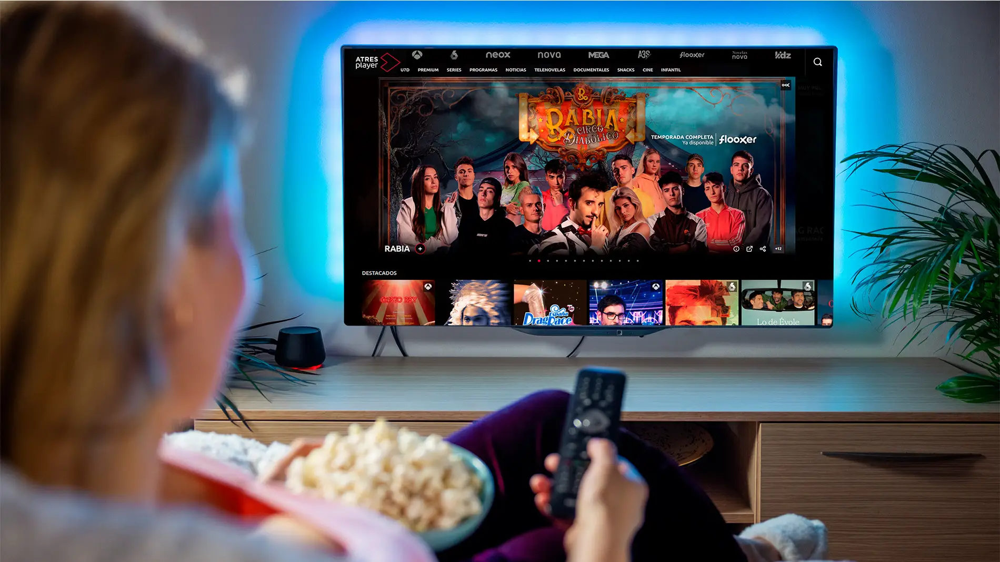

El streaming (cuya traducción literal sería "transmisión por secuencias" o "flujo continuo") es una tecnología que permite la distribución digital de contenido multimedia—como audio, video o videojuegos—a través de una red de computadoras, generalmente Internet, en tiempo real. A diferencia de la descarga tradicional, donde se debe esperar a que el archivo completo se guarde en el dispositivo antes de poder usarlo, el streaming permite que el usuario comience a ver o escuchar el contenido casi inmediatamente, a medida que los datos llegan en pequeños paquetes continuos.
Funcionamiento y Tecnología
El proceso se basa en enviar un flujo constante de datos desde un servidor a un dispositivo receptor (como tu teléfono, computadora o Smart TV). El contenido se codifica, se fragmenta en pequeños paquetes y se envía. El dispositivo receptor decodifica y reproduce estos paquetes de forma simultánea. Para asegurar una reproducción fluida y sin interrupciones, se utiliza un pequeño espacio de almacenamiento temporal llamado búfer. El búfer almacena unos segundos de contenido por adelantado, lo que ayuda a prevenir cortes si la conexión a internet sufre fluctuaciones momentáneas.
Tipos de Streaming y Usos
El streaming ha revolucionado la forma en que consumimos medios. Se divide principalmente en dos tipos:
Bajo Demanda (On-Demand): Es el tipo más común. Permite al usuario acceder a contenido pregrabado (como películas, series, canciones o podcasts) exactamente cuando lo desea, ofreciendo control total sobre la reproducción (pausa, avance, retroceso). Plataformas como Netflix, Spotify y YouTube (para videos grabados) usan este modelo.
En Vivo (Live Streaming): Es la retransmisión de un evento en el preciso instante en el que está sucediendo. Esto incluye partidos deportivos, conciertos, noticias en directo o las transmisiones de videojuegos y charlas en plataformas como Twitch o YouTube Live.
